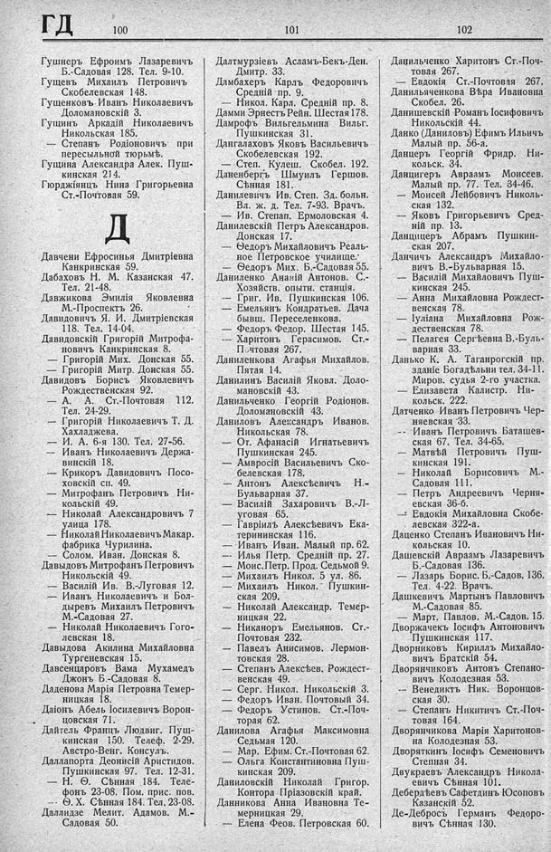

Лист источника 384
Скан

Распознанный текст
ГД 100 101 102
Гушнеръ Ефроимъ Лазаревичъ
Б.-Садовая 128. Тел. 9-10.
Гущевъ Михаилъ Петровичъ
Скобелевская 148.
Гущенковъ Иванъ Николаевичъ
Доломановскій 3.
Гущинъ Аркадій Николаевичъ
Никольская 185.
— Степанъ Родіоновичъ при
пересыльной тюрьмѣ.
Гущина Александра Алек. Пуш-
кинская 214.
Гюрджіянцъ Нина Григорьевна
Ст.-Почтовая 59.
Д
Давчени Ефросинья Дмитріевна
Канкринская 59.
Дабаховъ Н. М. Казанская 47.
Тел. 21-48.
Давжикова Эмилія Яковлевна
М.-Проспектъ 26.
Давидовичъ Я. И. Дмитріевская
118. Тел. 14-04.
Давидовскій Григорій Митрофа-
новичъ Канкринская 8.
— Григорій Мих. Донская 55.
— Григорій Митр. Донская 55.
Давидовъ Борисъ Яковлевичъ
Рождественская 92.
— А. А. Ст.-Почтовая 112.
Тел. 24-29.
— Григорій Николаевичъ Т. Д.
Хахладжева.
— И. А. 6-я 130. Тел. 27-56.
— Иванъ Николаевичъ Держа-
винскій 18.
— Крикоръ Давидовичъ Посо-
ховскій сп. 49.
— Митрофанъ Петровичъ Ни-
кольскій 49.
— Николай Александровичъ 7
улица 178.
— Николай Николаевичъ Макар.
фабрика Чурилина.
— Солом. Иван. Донская 8.
Давыдовъ Митрофанъ Петровичъ
Никольскій 49.
— Василій Ив. В.-Луговая 12.
— Иванъ Николаевичъ и Бол-
дыревъ Михаилъ Петровичъ
М.-Садовая 27.
— Николай Николаевичъ Гого-
левская 18.
Давыдова Акилина Михайловна
Тургеневская 15.
Давсенцаровъ Вама Мухамедъ
Джонъ Б.-Садовая 8.
Даденова Марія Петровна Темер-
ницкая 18.
Даіонъ Абель Іосилевичъ Ворон-
цовская 71.
Дайтель Францъ Людвиг. Пуш-
кинская 150. Телеф. 2-29.
Австро-Венг. Консулъ.
Даллапорта Деонисій Аристидов.
Пушкинская 97. Тел. 12-31.
— Н. Ѳ. Сѣнная 184. Теле-
фонъ 23-08. Пом. прис. пов.
— Ѳ. Х. Сѣнная 184. Тел. 23-08.
Даллидзе Мелит. Адамов. М.-
Садовая 50.
Далтмурзіевъ Асламъ-Бекъ-Ден.
Дмитр. 33.
Дамбахеръ Карлъ Федоровичъ
Средній пр. 9.
— Никол. Карл. Средній пр. 8.
Дамми Эрнестъ Рейн. Шестая 178.
Дамрофъ Вильгельмина Вильг.
Пушкинская 31.
Дангалаховъ Яковъ Васильевичъ
Скобелевская 192.
— Степ. Кулеш. Скобел. 192.
Даненбергъ Шмуилъ Гершов.
Сѣнная 181.
Данилевичъ Ив. Степ. Зд. больн.
Вл. ж. д. Тел. 7-93. Врачъ.
— Ив. Степап. Ермоловская 4.
Данилевскій Петръ Александров.
Донская 17.
— Ѳедоръ Михайловичъ Реаль-
ное Петровское училище.
— Ѳедоръ Мих. Б.-Садовая 55.
Даниленко Ананій Антонов. С.-
Хозяйств. опытн. станція.
— Григ. Ив. Пушкинская 106.
— Емельянъ Кондратьев. Дача
бывш. Переселенкова.
— Федоръ Федор. Шестая 145.
— Харитонъ Герасимов. Ст.-
Почтовая 267.
Даниленкова Агафья Михайлов.
Пятая 14.
Данилинъ Василій Яковл. Доло-
мановскій 43.
Данильченко Георгій Родіонов.
Доломановскій 43.
Даниловъ Александръ Иванов.
Никольская 78.
— От. Афанасій Игнатьевичъ
Пушкинская 245.
— Амвросій Васильевичъ Ско-
белевская 178.
— Антонъ Алексѣевичъ Н.-
Бульварная 37.
— Василій Захаровичъ В.-Л-
уговая 65.
— Гавріилъ Алексѣевичъ Ека-
терининская 116.
— Иванъ Иван. Малый пр. 62.
— Илья Петр. Средній пр. 27.
— Моис. Петр. Прод. Седьмой 9.
— Михаилъ Никол. 5 ул. 86.
— Михаилъ Никол. Пушкин-
ская 209.
— Николай Александр. Темер-
ницкая 22.
— Никаноръ Емельянов. Ст.-
Почтовая 232.
— Павелъ Анисимов. Лермон-
товская 28.
— Степанъ Алексѣев. Рождест-
венская 49.
— Серг. Никол. Никольскій 3.
— Федоръ Иван. Почтовый 34.
— Федоръ Устинов. Ст.-Поч-
торая 62.
Данилова Агафья Максимовна
Седьмая 120.
— Мар. Ефим. Ст.-Почтовая 62.
— Ольга Константиновна Пуш-
кинская 209.
Даниловскій Николай Григор.
Контора Пріазовскій край.
Данникова Анна Ивановна Те-
мерницкая 29.
— Елена Феов. Петровская 60.
Данильченко Харитонъ Ст.-Поч-
товая 267.
— Евдокія Ст.-Почтовая 267.
Данильяченкова Вѣра Ивановна
Скобел. 26.
Данишевскій Романъ Іосифовичъ
Никольскій 44.
Данко (Даниловъ) Ефимъ Ильичъ
Малый пр. 56-а.
Данцеръ Георгій Фридр. Ни-
кольск. 34.
Данцигеръ Авраамъ Моисеев.
Малый пр. 77. Тел. 34-46.
— Моисей Лейбовичъ Николь-
ская 132.
— Яковъ Григорьевичъ Сред-
ній пр. 13.
Данцицеръ Абрамъ Пушкин-
ская 207.
Данчичъ Александръ Михайло-
вичъ В.-Бульварная 15.
— Василій Михайловичъ Пуш-
кинская 245.
— Анна Михайловна Рождест-
венская 78.
— Іуліана Михайловна Рож-
дественская 78.
— Пелагея Сергѣевна В.-Буль-
варная 33.
Данько К. А. Таганрогскій пр.
зданіе Богадѣльни тел. 34-11.
Миров. судья 2-го участка.
— Елизавета Калистр. Ни-
кольск. 222.
Датченко Иванъ Петровичъ Чер-
няевская 33.
-- Иванъ Петровичъ Баташев-
ская 67. Тел. 34-65.
— Матвѣй Петровичъ Пуш-
кинская 191.
— Николай Борисовичъ М.-
Садовая 111.
— Петръ Андреевичъ Черня-
евская 36-б.
— Евдокія Михайловна Скобе-
левская 322-а.
Даценко Степанъ Ивановичъ Ни-
кольская 10.
Дашевскій Авраамъ Лазаревичъ
Б.-Садовая 136.
— Лазарь Борис. Б.-Садов. 136.
Тел. 4-22. Врачъ.
Дашкевичъ Мартынъ Павловичъ
М.-Садовая 85.
— Март. Павлов. М.-Садов. 15.
Дворжачекъ Іосифъ Антоновичъ
Пушкинская 117.
Дворниковъ Кириллъ Михайло-
вичъ Братскій 54.
Дворянчиковъ Антонъ Степано-
вичъ Колодезная 53.
-- Венедиктъ Ник. Воронцов-
ская 30.
— Степанъ Никитичъ Ст.-Поч-
товая 164.
Дворянчикова Марія Харитонов-
на Колодезная 53.
Дворяткинъ Іосифъ Семеновичъ
Степная 34.
Двукраевъ Александръ Никола-
евичъ Сѣнная 101.
Дебердѣевъ Сафетдинъ Юсоповъ
Казанскій 52.
Де-Дебросъ Германъ Федоро-
вичъ Сѣнная 130.